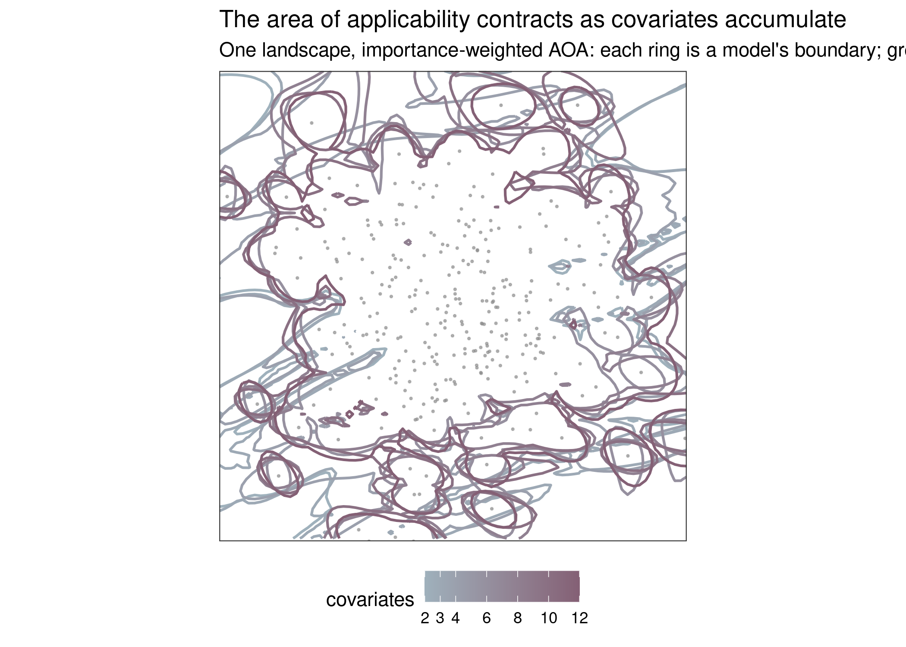
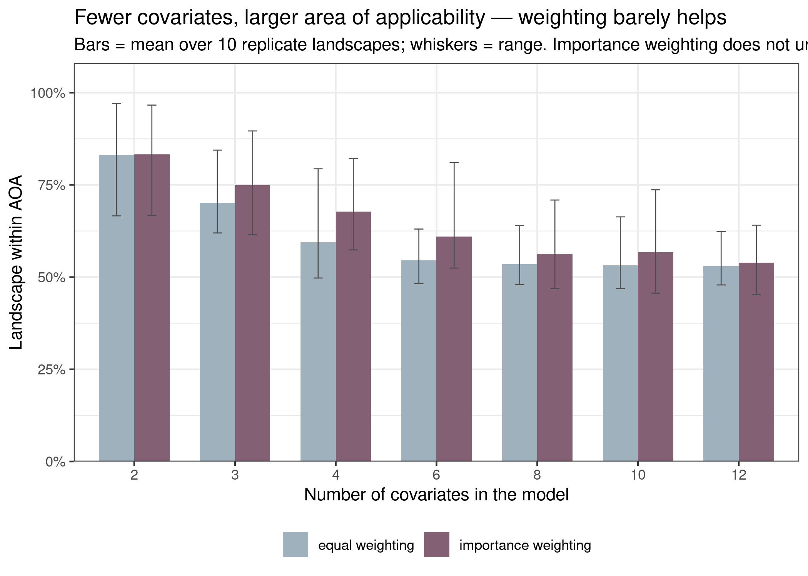

Appendix 4 — More covariates, smaller area of applicability
Situation. The area of applicability (AOA) is the part of the landscape where a model interpolates rather than extrapolates, found by measuring how dissimilar each location is, in predictor space, from the training data (Meyer & Pebesma 2021). Because that dissimilarity is measured across all of a model’s covariates, the AOA is a property of predictor-space geometry, not of the response: adding covariates — even uninformative ones — stretches the space the training sample has to cover, and a fixed, spatially clustered survey covers proportionally less of it. The manuscript asserts that models with fewer covariates retain larger AOAs; here we show that directly on a virtual species, where the true landscape is known.
Experiment. Following the virtual-species convention (Grimmett et al. 2021), each replicate simulates a landscape of twelve spatially autocorrelated predictors and a rare species whose true niche depends on only the first three. We drew a single clustered survey (one accessible core, as real occurrence data tend to be), then fit the same kind of SDM (a GLM) using the first \(K\) covariates for \(K = 2, 3, 4, 6, 8, 10, 12\). For each model we computed the AOA over the whole landscape with CAST::aoa() and recorded the fraction of the landscape inside it. Because a reviewer will rightly ask whether weighting the dissimilarity by variable importance rescues the richer models, we scored every model two ways: with equal variable weights, and with the dissimilarity weighted by the fitted model’s variable importance — passing the caret train object straight to aoa(), so the weights are caret::varImp (the GLM \(|z|\) statistics), the CAST-recommended default that down-weights weak predictors. Within a replicate everything but the number of covariates — the species, the survey, the landscape — is held fixed, so any change in the AOA is attributable to dimensionality alone; we repeated the whole simulation over ten random landscapes (seeds 1–10) to see how general the effect is.
Result. Averaged over the ten replicates, the equal-weight AOA falls from 83% of the landscape at two covariates to 53% at twelve. Crucially, importance weighting barely changes this — 83% down to 54% — and in all 10 of 10 replicates the importance-weighted AOA was still smaller at twelve covariates than at two (second figure). Even though only three covariates truly define the species, the nine noise predictors carry enough spurious GLM importance that down-weighting them does not spare the AOA; weighting softens the collapse by only a few points, not away. Geometrically (first figure) every model’s in-domain region is anchored on the surveyed core, and the boundary contracts toward it as covariates are added: the low-dimensional models reach far across the map, the high-dimensional ones retreat to the environments the survey actually sampled. The decline is steepest over the first few covariates and then flattens, as later predictors add less fresh space once the easy coverage is spent. It is a strong tendency rather than a law — individual replicates have the AOA tick up when a lucky covariate opens fresh space — but the direction is unambiguous and survives importance weighting.

Conclusion. The AOA is a dimensionality budget: every covariate a model carries is a direction in which the training sample must resemble the landscape, so richer models interpolate over less of it — and weighting the dissimilarity by variable importance, the obvious remedy, does not buy the budget back, because weak predictors retain enough spurious importance to keep spending it. This is the geometric counterpart to the skill downgrade of Appendix 2 and the shifting in-AOA prevalence of Appendix 3 — restricting to the AOA is more consequential, not less, for a many-covariate model. Prefer parsimonious covariate sets when a broad area of applicability matters, and always report the AOA alongside the model, because two models of equal apparent skill can apply to very different fractions of the same landscape.